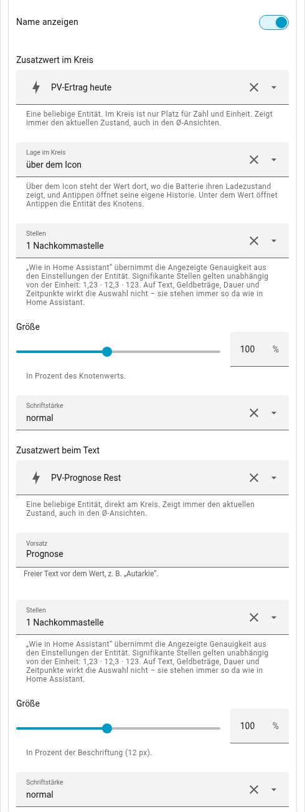
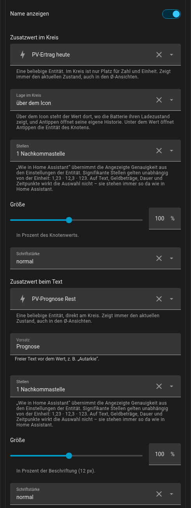

nodes:
solar:
inside: { entity: sensor.pv_ertrag_heute, decimals: 1 } # im Kreis
label: { entity: sensor.pv_prognose_rest, prefix: Prognose }
grid:
label: { entity: sensor.netzbezug_heute, prefix: Bezug, decimals: 0 }
house:
show_name: false
inside: { entity: sensor.autarkie, position: below }
battery:
show_state: false
label: { entity: sensor.batterie_restenergie, prefix: Rest, weight: bold }Zusatzwerte an den Knoten
Jeder Knoten kann einen zweiten Wert zeigen: den Tagesertrag neben der PV-Leistung, den Netzbezug von heute, eine Autarkiequote am Haus, die Restenergie der Batterie. Es kann jede Entität sein – die Karte zeigt ihren Zustand so, wie Home Assistant es tut, und rechnet selbst nichts aus.
Zum Ausprobieren: Die Schalter stellen an allen vier Knoten dieselben Zusatzwerte um – im Kreis den Tageswert, beim Text einen zweiten mit Vorsatz. Die Batterie hat keinen Wert im Kreis. Darunter steht das YAML dazu; im Editor ist es je Knoten einzeln einstellbar.
Je Knoten verschieden, etwa so:
insidesteht im Kreis, über dem Icon (position: above, Standard) oder unter dem Wert (below). Dort ist Platz für eine Zahl mit Einheit, nicht mehr. Die Batterie hat keins – sie zeigt dort schon zwei Werte.labelsteht direkt am Kreis, mit optionalem Vorsatzprefix. Reicht der Platz nicht, wird zuerst der Vorsatz gekürzt.decimals:ha(Standard) schreibt den Wert wie Home Assistant, einschließlich der Angezeigten Genauigkeit aus den Einstellungen der Entität.0–3legt die Nachkommastellen fest,sig2–sig4die signifikanten Stellen, unabhängig von der Einheit. Die Einheit wird nie umgerechnet – Wh bleiben Wh.size(60–150 %, Standard 100, bezogen auf den Knotenwert bzw. die Beschriftung) undweight(normal– Standard –,medium,bold) je Feld; die Farbe steht unter Farben (colors.solar_inside,colors.house_label, … – standardmäßig grau).show_nameundshow_stateblenden den Namen („PV", „Netz", …) und das Zustandswort („Einspeisung", „lädt") aus – mit oder ohne Zusatzwerte. Ohne Zustandswort zeigt nur noch die Farbe die Richtung.- Zusatzwerte zeigen immer den aktuellen Zustand, auch in den Ø-Ansichten. Antippen eines Werts am Kreis oder über dem Icon öffnet seine eigene Historie; ein Wert unter dem Knotenwert gehört zum Knoten und öffnet dessen Entität.
decimalswirkt nicht auf Text, Geldbeträge, Dauer und Zeitpunkte – die stehen immer so da wie in Home Assistant. Und die eigene Leistungs-Entität eines Knotens als Zusatzwert erscheint im Format von Home Assistant („3800 W“), nicht in dem der Karte („3,80 kW“).
Im Editor: Basis-Entitäten: Beschriftung & Zusatzwerte, ein Abschnitt je Knoten – hier die PV mit dem Ertrag im Kreis und der Prognose am Kreis:

